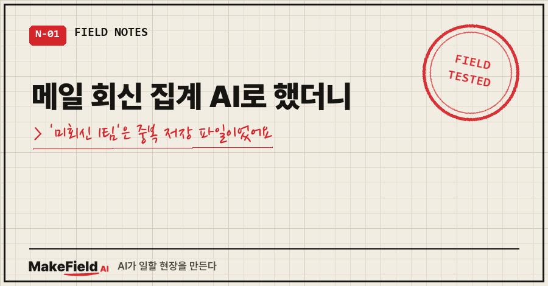
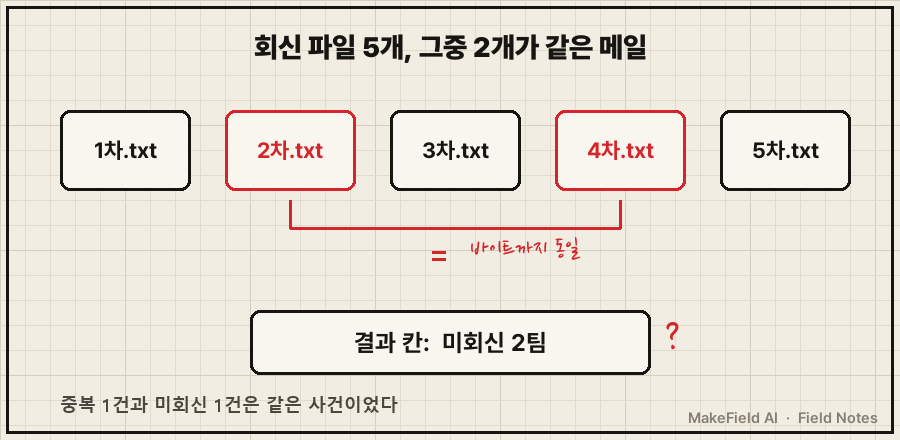
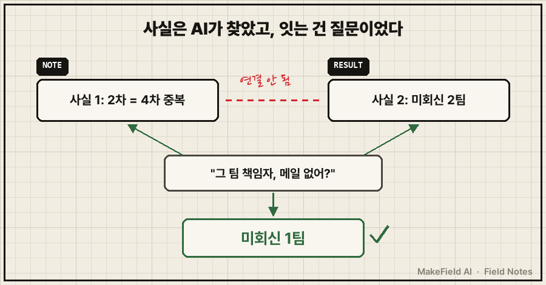
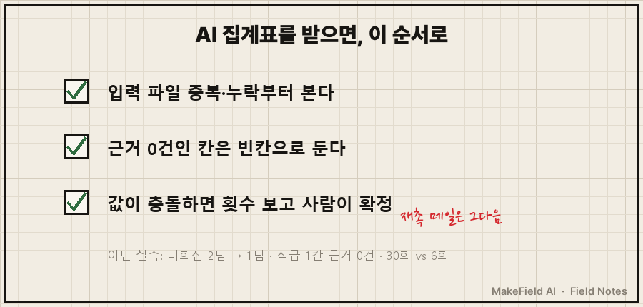

팀별로 돌아온 회신 메일을 AI한테 엑셀로 정리해 달라고 했어요.
결과표에 "아직 회신 안 한 팀: 2팀"이 찍혀 나왔고요.
그중 한 팀은 이미 답을 보냈더라고요. 회신이 없던 게 아니라, 제 폴더에 같은 메일 파일이 두 개 들어 있었던 거예요.
AI로 메일 회신 집계를 하면 "누가 빠졌다"는 결론이 사람의 행동이 아니라 입력 파일 상태에서 나올 수 있습니다. 미회신을 재촉하기 전에 입력 파일에 중복·누락이 없는지부터 봐야 해요. 2026년 11월, 회신 메일 txt 파일로 집계표를 만들다 실제로 겪은 일입니다.
더 얄궂은 건, AI가 그 중복을 처음부터 찾아 놓고 있었다는 거예요.
1. 메일 5통을 주고 "엑셀로 집계해 줘"
일은 단순했어요.
팀마다 한 통씩 답을 받아야 하는 메일이 있었고,
도착한 회신을 txt 파일로 저장해서 1차, 2차, 3차.. 이렇게 번호를 붙였어요.
그렇게 모인 파일 5개를 AI한테 주고 "팀별로 표 만들어 줘" 한 게 시작입니다.
첫 결과표 아래에 AI가 붙인 메모는 이랬어요.
[v1 특이사항 — AI 메모, 팀 이름 가림]
- 2차 파일 = 4차 파일 (바이트 동일, 중복)
- 1차 파일 상단 항목: 작성자 미기재
- A팀 회신 파일 없음명단이랑 맞춰 본 두 번째 판에서는 "아직 회신 안 한 팀 2곳"이 표에 들어갔어요.
중복 메모는 표 아래 특이사항 칸에 조용히 남아 있었고,
저는 결과 칸의 "미회신 2팀"부터 봤어요.
둘이 같은 이야기라는 생각은 이때까지 아무도 안 했습니다. AI도, 저도요.
현장 설비 일을 15년 하다 보니, 사람 손으로 하던 취합이 AI 한 줄로 끝나면 그게 그렇게 반가울 수가 없어요. 반가운 만큼 덜 의심하게 되더라고요.. 여러분도 메일 취합 같은 일, 요즘 AI한테 넘기고 계시죠?

2. "그 팀 책임자 메일, 정말 없어?"에서 뒤집혔어요
미회신으로 찍힌 팀 하나가 걸렸어요.
그 팀엔 책임자가 분명히 있는데, 회신이 하나도 없다는 게요.
그래서 물었어요. "그 팀 책임자 있잖아, 메일 없어?"
AI가 원문 5개를 전부 검색해서 돌려준 결과는 이랬습니다.
[원문 5개 검색 — 그 팀 책임자]
- 요청 메일의 수신(To)에 있음
- 다른 사람 회신의 참조(Cc)에 있음
- 본인이 보낸 회신: 없음여기까지는 "역시 회신 안 했네"로 끝날 수 있었어요.
그런데 AI가 이번엔 앞서 적어 둔 메모를 끌어왔습니다. "2차와 4차가 똑같은데, 원래 그 자리 중 하나가 이분 회신이었을 수 있다."
메일함을 다시 열어 보니 맞았어요.
그 책임자의 회신은 와 있었어요. txt로 옮기다가 다른 사람 메일을 한 번 더 저장한 걸로 보이는데, 정확히 어느 단계에서 꼬였는지는 확인 못 했습니다. 2차 파일 자리를 진짜 회신으로 바꿔 넣으니 미회신은 2팀에서 1팀으로 줄었습니다.
남은 1팀의 회신도 나중에 6번째 파일로 들어와서, 최종적으로는 전 팀 회신으로 닫혔어요.

3. 같은 표에서 AI가 지어낸 칸도 하나 있었어요
회신 문제를 고치는 동안 표에 사람마다 직급을 채우는 작업도 같이 했어요.
여기서 두 번째 함정이 나왔습니다.
세 번째 판까지 한 사람의 직급이 그럴듯한 값으로 채워져 있었어요.
나중에 업무 문서를 전수 검색해 보니 그 사람은 문서마다 맡은 자리(직책)만 나오고, 직급은 한 번도 적힌 적이 없었습니다. 근거 0건짜리 칸이었던 거죠. 그 칸은 비워 두고, 제가 확인해서 채웠어요.
다른 한 사람은 반대로 근거가 둘이었어요.
인력표엔 A 직급, 메일 서명엔 B 직급.
AI는 업무 문서에서 등장 횟수를 셌고(B 30회, A 6회), 최종 확인은 제가 했어요. B가 맞았습니다.
같은 작업 안에서 AI가 잘한 것도 있어요. 1차 파일 상단의 작성자 없는 항목은 제가 알려 줄 때까지 "미기재"로 비워 뒀고, 원문 오타로 보이는 단어도 고치지 않고 원문 그대로 뒀거든요. 모를 때 비우는 칸과 모를 때 채우는 칸이 한 표 안에 섞여 있었던 셈이에요.
덤으로 하나 더. 두 번째 판 엑셀을 제가 열어 둔 채로 수정을 시켰더니 저장이 안 돼서 파일 이름을 하나 더 올려 새로 뽑았어요. 엑셀 자동화 해 보신 분들은 다 한 번씩 겪는 그거요.
4. 자주 묻는 질문
Q. 메일 회신 집계에서 중복 파일은 어떻게 바로 찾나요?
txt 같은 일반 파일이면 해시값을 비교하면 돼요. 내용이 한 글자라도 다르면 해시가 달라지고, 같으면 똑같이 나옵니다. 윈도우 PowerShell에선 아래 한 줄이면 폴더 안 파일 해시가 나란히 찍혀요.
Get-FileHash .\*.txt | Sort-Object Hash | Format-Table Hash, Path마이크로소프트 공식 문서에도 "두 파일의 해시값이 같으면 파일 내용도 같다(If the hash values of two files are identical, the contents of the files are also identical)"고 적혀 있어요. 기본 알고리즘은 SHA256입니다. 같은 해시가 두 줄 붙어 나오면 그게 중복입니다. 단, 워드(docx)는 내용이 같아도 다시 저장만 하면 해시가 바뀔 수 있어서 얘기가 달라요. 그건 예전 글에 따로 정리했어요.
Q. AI가 "중복 있음"이라고 알려 줬는데 왜 놓쳤나요?
메모와 결론이 따로 적혀 있었기 때문이에요. AI는 "중복"을 특이사항 칸에, "미회신 2팀"을 결과 칸에 각각 적었고, 둘을 잇는 문장은 없었어요. 저도 둘 다 읽고 잇지 않았고요. 잇게 만든 건 "그 사람 메일 없어?"라는 구체적인 질문이었습니다.
Q. 그럼 AI한테 처음부터 뭐라고 시키면 되나요?
제가 지금 쓰는 순서는 이래요. ①"입력 파일끼리 중복·빈 파일부터 확인해" ②"결론 중에 입력 상태 때문에 생길 수 있는 게 있으면 같이 적어" ③"근거 문서가 없는 칸은 빈칸으로 둬". 셋 다 이번에 실제로 막혔던 자리예요.
5. AI 집계 결과, 이 순서로 의심해요
| AI가 낸 결론 | 먼저 볼 것 | 이번에 실제로 나온 것 |
|---|---|---|
| "○팀 미회신" | 입력 파일 중복·누락 | 2차=4차 중복 → 미회신 2팀이 1팀 |
| 빈칸 없이 다 채운 표 | 칸마다 근거 문서 개수 | 직급 1칸 근거 0건 |
| 문서마다 다른 값 | 등장 횟수 + 사람 확인 | 30회 vs 6회, 사람이 확정 |

하마터면 이미 답을 보낸 사람한테 "회신 부탁드립니다" 메일을 보낼 뻔했어요. 그 메일이 나갔으면 틀린 건 AI가 아니라 제 폴더였는데도, 상대는 저를 기억했겠죠.
AI가 사실을 찾아 주는 속도는 확실히 빨라요. 다만 찾아 놓은 사실 두 개를 하나로 엮는 건, 아직은 제 질문 몫이더라고요.
엑셀·메일처럼 매일 하는 일에 AI를 붙이다 걸린 장면들은 makefield.ai에 '실제로 걸린 곳' 위주로 추려 두고 있어요.
참고
- Microsoft 공식 문서 — Get-FileHash (PowerShell): 해시값으로 두 파일 내용이 같은지 확인 → https://learn.microsoft.com/powershell/module/microsoft.powershell.utility/get-filehash
- 실측: 2026년 11월 개인 작업 기록(회신 메일 집계 v1~v5 과정, 조직·인물·목적·결과값 제외)
태그: #메일회신집계 #메일취합 #회신현황 #엑셀집계 #AI엑셀집계 #AI집계오류 #파일중복확인 #GetFileHash #해시비교 #데이터정리 #업무자동화 #AI검증 #빈칸규칙 #AI오답노트 #MakeFieldAI